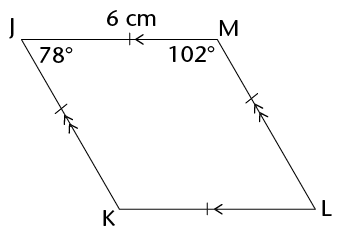
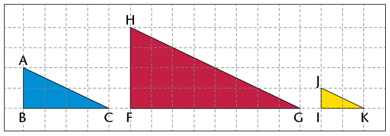

Meetkunde van
In hierdie hoofstuk gaan jy meer leer oor verskillende soorte driehoeke en vierhoeke en hulle eienskappe. Jy gaan figure wat kongruent is en figure wat gelykvormig is ondersoek. Jy gaan ook jou kennis van die eienskappe van 2D-figure gebruik om meetkundige probleme op te los.
Soorte driehoeke
Jy weet teen hierdie tyd dat ’n driehoek ’n geslote 2D-figuur met drie reguit sye is. Ons kan verskillende soorte driehoeke volgens die lengtes van hulle sye en volgens die groottes van hulle hoeke klassifiseer of benoem.
Benoem driehoeke volgens hulle sye
- Pas die naam van elke soort driehoek by die
korrekte beskrywing.
Naam van driehoek
Beskrywing van driehoek
Gelykbenige driehoek
Al die sye is ewe lank.
Ongelykbenige driehoek
Geen sye is ewe lank nie.
Gelyksydige driehoek
Twee sye is ewe lank.
- Benoem elke soort driehoek deur na sy sye te
kyk.

Benoem driehoeke volgens hulle hoeke
Onthou die volgende soorte hoeke:
Bestudeer die volgende driehoeke en beantwoord dan die vrae:

- Is al die hoeke van ’n driehoek altyd ewe groot? ____________
- As ’n driehoek ’n stomphoek het, word dit ’n ____________ driehoek genoem.
- As ’n driehoek net skerphoeke het, word dit ’n ____________ driehoek genoem.
- As ’n driehoek ’n hoek het wat gelyk is aan ______, word dit ’n reghoekige driehoek genoem .
Ondersoek die hoeke en sye van driehoeke
-
- Wat is die som van die
binnehoeke van ’n driehoek?
- Kan ’n driehoek twee regte hoeke hê?
Verduidelik jou antwoord.
- Wat is die som van die
binnehoeke van ’n driehoek?
- Kan ’n driehoek meer as een stomphoek hê? Verduidelik
jou antwoord.
As jy nie die antwoorde in 1(b) en (c) kan uitwerk nie, probeer om die driehoeke te konstrueer om die antwoorde te kry.
- Kyk na die driehoeke hier onder. Die bogies
wys watter hoeke is gelyk.
- \({\triangle}\text{ABC}\) is ’n gelyksydige driehoek.
Wat sien jy raak as jy na sy hoeke kyk?
- \({\triangle}\text{FEM}\) is ’n gelykbenige driehoek.
Wat sien jy raak as jy na sy hoeke kyk?
- \({\triangle}\text{JKL}\) is ’n
reghoekige driehoek. Is sy langste sy teenoor die
90° -hoek?
- Konstrueer enige drie reghoekige driehoeke op ’n vel
papier. Is die langste sy
altyd teenoor die
90° hoek?
- \({\triangle}\text{ABC}\) is ’n gelyksydige driehoek.
Wat sien jy raak as jy na sy hoeke kyk?
Eienskappe van driehoeke:
- Die som van die binnehoeke van ’n driehoek is 180°.
- ’n Gelyksydige driehoek e se sye is almal ewe lank en elke binnehoek is gelyk aan 60°.
- ’n Gelykbenige driehoek het twee sye wat ewe lank is en die hoeke teenoor die gelyke sye is ewe groot.
- ’n Ongelykbenige driehoek het nie sye wat ewe lank is nie.
- ’n Reghoekige driehoek het ’n regte hoek (90°).
- ’n Stomphoekige driehoek het een stomphoek (tussen 90° en 180°).
- ’n Skerphoekige driehoek het drie skerphoeke (<90°).
Binnehoeke is die hoeke binne-in ’n geslote figuur, nie die hoeke aan die buitekant nie.
Onbekende hoeke en sye van driehoeke
Jy kan dit wat jy reeds oor driehoeke weet gebruik om ander inligting te verkry. As jy nuwe inligting uitwerk, moet jy altyd redes gee vir die bewerings wat jy maak. Kyk na die voorbeelde hier onder. Onbekende hoeke en sye is uitgewerk nadat sekere inligting gegee is. Die rede vir elke bewering word tussen vierkantige hakies geskryf.
\( \hat{A} = \hat{B} + \hat{C} = 60^{\circ}\) [Hoeke in ’n gelyksydige \(\triangle\) = 60°]
DE = DF [Gegee]
\( \hat{E} = \hat{F}\) [Hoeke teenoor die gelyke sye van ’n gelykbenige \({\triangle}\) is ewe groot]
\(\hat{J} = 55^{\circ}\) [Die som van die binnehoeke van ’n \({\triangle}\ = 180^{\circ}\); so \( \hat{J} = 180^{\circ} - 40^{\circ} - 85^{\circ}\)]
Jy kan die volgende redes verkort op die maniere wat gewys word:
- Som van binnehoeke (\(\angle\)e)van ’n driehoek \({\triangle}\) = 180°: binne \(\angle\)e van \({\triangle}\)
- Gelykbenige driehoek het 2 sye en 2 hoeke wat gelyk is : gelykbenige \({\triangle}\)
- elyksydige driehoek het 3 sye en 3 hoeke wat gelyk is : gelyksydige \({\triangle}\)
- Hoeke wat ’n reguit lyn vorm = 180°: reguit lyn
Werk onbekende hoeke en sye uit
Bepaal die groottes van onbekende hoeke en sye in die volgende driehoeke. Gee altyd redes vir elke bewering eke en sye ine bewering.
- Bepaal
\(\hat{C}\)?
\( \begin{align} \hat{A} + \hat{B} + \hat{C} &= \text{______} \text{[binne } \angle\text{e van 'n }{\triangle}] \\ \ 50 ° + \text{______} + \hat{C} &= \text{______} \\ 145 ° + \hat{C} &= \text{______} \\ \hat{C} &= \text{______} -145 ° \\ \hat{C} &= \text{______} \end{align} \)
- Bepaal
\(\hat{P}\).
-
-
Bepaal
KM
- Bepaal
\(\hat{K}\).

-
Bepaal
KM
- Wat is die grootte van
\(\hat{S}\)?

-
- Bepaal
CB.
- Bepaal
\(\hat{C}\) as \(\hat{A} = 50^{\circ}\).

- Bepaal
CB.
-
- Bepaal
DF.
- Bepaal
\(\hat{E}\) as \(\hat{D} = 100^{\circ}\)

- Bepaal
DF.
Werk nog onbekende hoeke en sye uit
Bereken die grootte van- Bereken die groottes van
\(\hat{X}\) en
\(\hat{Z}\).

- Bereken die grootte van \(x\).

- KLM is ’n reguit lyn. Bereken die
groottes van \(x\) en \(y\).

- Hoek
\(b\) en ’n hoek van
130°
vorm ’n gestrekte hoek. Bereken die groottes van
\(a\) en \(b\).

- Hoeke
\(m\) en \(n\) vorm ’n gestrekte hoek. Bereken die groottes van
\(m\)
en
\(n\).

- BCD is ’n reguit lyn. Bereken die
grootte van
\(x\).

- Bereken die grootte van
\(x\) en dan die grootte van
\( \hat{H}\).

- Bereken die grootte van
\(\hat{N}\)

- DNP is ’n
reguit lyn. Bereken die
groottes van
\(x\) en
\(y\).

Soorte vierhoeke en hulle eienskappe
’n Vierhoek is ’n figuur met vier reguit sye wat by vier hoekpunte ontmoet. In baie vierhoeke het al vier die sye verskillende lengtes en het die hoeke verskillende groottes.
Jy het vantevore met die volgende soorte vierhoeke gewerk â sommige van hulle het gelyke sye en gelyke hoeke:

- parallelogramme
- reghoeke
- vlieërs
- ruite
- vierkante
- trapesiums
Die eienskappe van verskillende soorte vierhoeke
- In elke vraag hier onder word
verskillende voorbeelde van ’n bepaalde soort
vierhoek gegee. Identifiseer in elke geval die soort vierhoek. Beskryf die
eienskappe
van elke soort deur stellings oor die lengtes en rigtings van die sye te maak,
asook
oor die groottes van die hoeke. Dit mag nodig wees om afmetings te neem om dit
te
kan doen.
-
- Gebruik jou antwoorde en die tekeninge in vraag 1 om te bepaal of die volgende
stellings waar (W) of onwaar (O) is.
- ’n Reghoek is ’n parallelogram.
- ’n Vierkant is ’n parallelogram.
- ’n Ruit is ’n parallelogra .
- ’n Vlieër is ’n parallelogram.
- ’n Trapesium is ’n parallelogram.
- ’n Vierkant is ’n ruit.
- ’n Vierkant is ’n reghoek.
- ’n Vierkant is ’n vlieër.
- ’n Ruit is ’n vlieër.
- ’n Reghoek is ’n ruit.
- ’n Reghoek is ’n vierkant.
- ’n Reghoek is ’n parallelogram.


'n Konvensie is iets (soos ’n definisie of metode) waaroor die meeste mense saamstem, en wat hulle aanvaar en volg.
As ’n vierhoek al die eienskappe van ’n ander vierhoek het, kan jy dit in terme van die ander vierhoek definieer, soos jy hier bo vasgestel het.
- Hier is ’n paar konvensionele
definisies van vierhoeke:
- 'n Parallelogram is ’n vierhoek met twee teenoorstaande sye ewewydig.
- ’n Reghoek is ’n parallelogram met al vier hoeke gelyk aan 90°.
- ’n Ruit is ’n parallelogram met al vier sye ewe lank.
- ’n Vierkant is ’n reghoek met al vier sye ewe lank.
- ’n Trapesium is ’n vierhoek met een paar teenoorstaande sye ewewydig.
- ’n Vlieër is ’n vierhoek met twee pare aangrensende sye ewe lank.
Skryf ander definisies neer wat vir hierdie vierhoeke werk.
- Reghoek:
- Vierkant:
- Ruit:
- Vlieër:
- Trapesium:
Onbekende hoeke en sye van vierhoeke
Bepaal onbekende hoeke en sye
Bepaal die lengte van al die onbekende sye en hoeke in die volgende vierhoeke. Gee redes om jou bewerings te staaf. (Onthou ook dat die som van die hoeke van ’n vierhoek 360° is.)
-

-

- ABCD is ’n vlieër.

- Die omtrek van
RSTU
is 23 cm.

- PQRS iis ’n reghoek en het ’n omtrek
van
40 cm.
Kongruensie
Wat is kongruensie?

- \({\triangle}\text{ABC}\) word in die
vertikale lyn
(spieël) gereflekteer om
\({\triangle}\text{KLM}\) te gee.
Is die grootte en vorm van die twee driehoeke presies dieselfde?
- \({\triangle}\text{MON}\) word
90° om punt F geroteer
om vir jou
\({\triangle}\text{TUE}\) te gee.
Is die grootte en vorm van \({\triangle}\text{MON}\) en \({\triangle}\text{TUE}\) presies dieselfde?
- Vierhoek ABCD word 6 eenhede na
regs en 1 eenheid afwaarts verplaas
om vierhoek XRZY te gee.
Is ABCD en XRZY presies dieselfde?
In die vorige aktiwiteit is elk van die figure getransformeer (gereflekteer, geroteer of getransleer) om ’n tweede figuur te gee. Die tweede figuur in elke paar het dieselfde hoeke, sylengtes, grootte en oppervlakte as die eerste figuur. Die tweede figuur is dus ’n beeld van die eerste figuur.
Wanneer een figuur ’n beeld van ’n ander figuur is, sê ons die twee figure is kongruent.
Die simbool vir kongruent is: \(\equiv\)
Die woord kongruent kom van die Latynse woord congruere af, wat beteken "om saam te stem ". Figure is kongruent as hulle perfek op mekaar pas wanneer hulle bo-op mekaar gesit word.
Notasie van kongruente figure
Wanneer ons figure benoem wat kongruent is, benoem ons hulle so dat die passende, of ooreenstemmende, hoeke in dieselfde volgorde is. Byvoorbeeld, in \({\bf{\triangle}\text{ABC}}\) en \({\bf{\triangle}\text{KLM}}\) op die vorige bladsy sien ons
\(\hat{A}\) is kongruent aan (pas by en is gelyk aan) \(\hat{K}\).
\(\hat{B}\) is kongruent aan \(\hat{M}\).
\(\hat{C}\) is kongruent aan \(\hat{L}\).
Ons gebruik dus hierdie notasie: \({\bf{\triangle}\text{ABC}} \equiv {\bf{\triangle}\text{KML}}\).
Ons kan nie aanvaar dat veelhoeke kongruent is as die hoeke van die veelhoeke ewe groot is nie. Jy sal in Graad 9 oor die voorwaardes van kongruensie leer.
Net so vir die ander pare figure op die vorige bladsy: \({\bf{\triangle}\text{MON}} \equiv {\bf{\triangle}\text{ETU}}\) en \({\bf ABCD} \equiv {\bf XRZY}\).
Die notasie van kongruente figure wys ook watter sye van die twee figure ooreenstem en gelyk is. Byvoorbeeld , \({\triangle}\text{ABC} \equiv {\triangle}\text{KML}\) wys dat:
\(\text{AB = KM, BC = ML en AC = KL}\)
Die verkeerde notasie \({\triangle}\text{ABC} \equiv {\triangle}\text{KLM}\) sal die volgende verkeerde inligting gee:
\( \hat{B} = \hat{L}, ~\hat{C} = \hat{M},~\text{AB = KL, en AC = KM}\)
Identifiseer kongruente hoeke en sye
Skryf neer watter hoeke en sye is gelyk tussen elke paar kongruente figure.
- \({\triangle}\text{PQR} \equiv
{\triangle}\text{UCT}\)
- \({\triangle}\text{KLM} \equiv
{\triangle}\text{UWC}\)
- \( {\triangle}\text{GHI}\equiv
{\triangle}\text{QRT}\)
- \({\triangle}\text{KJL}\equiv
{\triangle}\text{POQ}\)
Gelykvormigheid
Jy het in Graad 7 geleer dat twee figure gelykvormig is wanneer hulle dieselfde vorm het (as hulle hoeke ewe groot is) maar dat hulle verskillende groottes mag wees. Die sye van een figuur is proporsioneel langer of korter as die sye van die ander figuur; dit wil sê, die lengte van elke sy word deur dieselfde getal gedeel of daarmee vermenigvuldig. Ons sê een figuur is ’n vergroting of ’n verkleining van die ander figuur
Kontroleer vir gelykvormigheid
- Kyk na die reghoeke hier onder en beantwoord
die vrae wat volg.

- Kyk na reghoek 1 en
ABCD:
Hoeveel keer is FH langer as BC?
Hoeveel keer is GF langer as AB?
- Kyk na reghoek 2 en
ABCD:
Hoeveel keer is IL langer as BC?
Hoeveel keer is LM langer as CD?
- Is reghoek 1 of reghoek 2 ’n vergroting van reghoek
ABCD? Verduidelik jou
antwoord.
- Kyk na reghoek 1 en
ABCD:
- Kyk na die driehoeke hier onder en
beantwoord die vrae wat volg.

- Hoeveel keer is:
-
FG
langer as
BC?
- HF langer as
AB?
- HG
langer as
AC?
- IK korter as
BC?
-
JI
korter as
AB?
- JK korter as
AC?
-
FG
langer as
BC?
- Is \({\triangle}\text{HFG}\) ’n vergroting van
\({\triangle}\text{ABC}\)? Verduidelik jou antwoord.
- Is \({\triangle}\text{JIK}\) ’n verkleining van
\({\triangle}\text{ABC}\)? Verduidelik jou antwoord.
- Hoeveel keer is:
In vraag 1 van die vorige aktiwiteit is reghoek KILM ’n vergroting van reghoek ABCD. ABCD is dus gelykvormig aan KILM. Die simbool vir âis gelykvormig aanâ is: |||. Ons skryf dus: ABCD ||| KILM.
Die driehoeke op die vorige bladsy is ook gelykvormig. \({\triangle}\text{HFG}\) is ’n vergroting van \({\triangle}\text{ABC}\) en \({\triangle}\text{JIK}\) is ’n verkleining van \({\triangle}\text{ABC}\).
In \({\triangle}\text{ABC}\) en \({\triangle}\text{HFG}, ~\hat{A} = \hat{H},~\hat{B} = \hat{F}\) en \(\hat{C} = \hat{G}\). Ons skryf dit dus soos volg: \({\triangle}\text{ABC} \text{|||} {\triangle}\text{HFG}\).
Net so is \({\triangle}\text{ABC} ||| {\triangle}\text{JIK}\).
As jy ’n veelhoek vergroot of verklein, moet jy al sy sye proporsioneel, of in dieselfde verhouding, vergroot of verklein. Dit beteken dat jy elke lengte deur dieselfde getal deel of daarmee vermenigvuldig.
Gelykvormige figure is figure wat dieselfde hoeke (dieselfde vorm) het maar nie noodwendig dieselfde grootte is nie.
Gebruik eienskappe van gelykvormige en kongruente figure
- Is die driehoeke in elke paar gelykvormig?
Gee ’n rede vir elke antwoord.

- Is
\({\triangle}\text{RTU} ||| {\triangle}\text{EFG}\)? Gee ’n rede vir jou
antwoord.

- \({\triangle}\text{PQR} |||
{\triangle}\text{XYZ}\). Bepaal die lengte van
XZ en
XY.

- Is die volgende stellings waar of onwaar?
Verduidelik jou antwoorde.
- Figure wat kongruent is, is gelykvormig.
- Figure wat gelykvormig is, is kongruent.
- Alle reghoeke is gelykvormig.
- Alle vierkante is gelykvormig.
- Figure wat kongruent is, is gelykvormig.
- Bestudeer die driehoeke hier onder en beantwoord
die volgende vrae:

- Merk die korrekte
antwoord. \({\triangle}\text{ABC}\) is:
☐ skerphoekig en gelyksydig
☐ stomphoekig en ongelykbenig
☐ skerphoekig en gelykbenig
☐ reghoekig en gelykbenig.
- As AB = 40 mm, wat is die lengte van
AC?
- As
\( \hat{B}= 80^{\circ}\), wat is die grootte van
\( \hat{C}\) en van
\( \hat{A}\)?
- \({\triangle}\text{ABC} \equiv
{\triangle}\text{FDE}\). Benoem al die sye in die twee driehoeke wat gelyk is
aan
AB.
- Benoem die sy wat gelyk is aan
DE.
- As
\( \hat{F}\) is 40° is, wat is die grootte van
\( \hat{B}\)?
- Merk die korrekte
antwoord. \({\triangle}\text{ABC}\) is:
- Kyk na figure JKLM en PQRS. (Gee redes vir jou
antwoorde hier onder.)

- Watter soort vierhoek is
JKLM?
- Is JKLM ||| PQRS?
- Wat is die grootte van
\(\hat{L}\)?
-
Wat is die grootte van
\(\hat{S}\)?
- Wat is die lengte van
KL?
- Watter soort vierhoek is
JKLM?